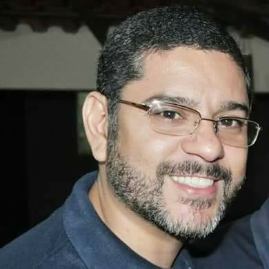
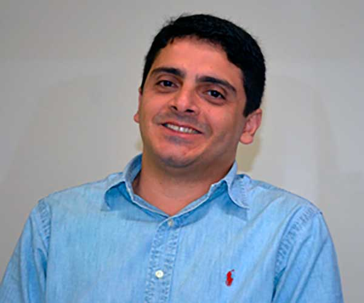

UNIGRANRIO
Corpo Docente
Daniel de Oliveira

Graduado em Informática pela UNIPLAC, Mestre em Computação Aplicada pela UNIVALI e Doutor em Engenharia de Produção e Sistemas pela UFSC. Fez parte do seu doutorado no INSA-ROUEN na França. Participou de vários congressos e aprovou artigos em periódicos internacionais na área de transporte urbano, otimização de redes de transporte, sistemas de informação e logística humanitária e emergencial. Atua na área de Ciência da Computação desde de 1998, com ênfase em Desenvolvimento de Aplicações Web em Sistemas Operacionais Linux e possui experiência como desenvolvedor e analista de softwares voltados a área de transportes e logística. Atualmente, dedica-se à pesquisa de métodos e tecnologias para solucionar problemas multidisciplinares através de Inteligência Artificial, Otimização Combinatória, Jogos Digitais e Logística Humanitária. Coordenou e atuou como professor do curso de Jogos Digitais na unidade Fatenp/UNIGRANRIO entre 2015-2017 e desde 2018 coordena os cursos de Bacharelado em Sistemas de Informação, CST em Análise e Desenvolvimento de Sistemas e Redes de Computadores, presencial e EAD na Unigranrio, campus Duque de Caxias, Rio de Janeiro. Está envolvido em projetos e startups de jogos, gamificação, realidade aumentada, Logística Humanitária e Internet das Coisas (IoT).
Currículo »
Anderson Silva do Nascimento

É graduado em Matemática pela Universidade do Estado do Rio de Janeiro (1989), mestrado em Computação pela Universidade Federal Fluminense (2001) e doutorado em História das Ciiências e das Técnicas e Epistemologia na Universidade Federal do Rio de Janeiro, concluído em 2013. É professor Adjunto Doutor da Universidade do Grande Rio e professor da Fundação de Apoio à Escola Técnica do Estado do Rio de Janeiro. Atua como professor nas áreas de Matemática, Arquiteturas de Computadores e Sistemas Operacionais e Engenharia de Software. (Texto informado pelo autor)
Currículo »
Luciene Cristina Soares Motta
Possui Licenciatura em Matemática pela Universidade Federal Rural do Rio de Janeiro (1997 - graduação), Bacharelado em Matemática pela Universidade Federal Rural do Rio de Janeiro (1997 - graduação), Mestrado em Ciência da Computação pela Universidade Federal Fluminense (2001), Pós-graduação em Análise, Projeto e Gerência de Sistemas pela PUC-Rio (2002) e Doutorado em Computação pela Universidade Federal Fluminense (2010). Atuou como professora de matemática no Ensino Fundamental II do Colégio Militar do Rio de Janeiro (Fundação Osório) quando fazia parte do quadro de Oficiais Técnicos Temporários do Exército Brasileiro e como professora de informática no Ensino Médio do Colégio Cidade. Atualmente é professora titular concursada da Fundação de Apoio a Escola Técnica, rofessora Adjunto Doutor I da Universidade do Grande Rio e professora de informática do Ensino Fundamental II do Colégio Santo Agostinho. Tem experiência na área de Ciência da Computação, com ênfase em Otimização Combinatória, Metaheurística e Inteligência Artificial. Atua no ensino superior na orientação de trabalhos de conclusão de curso e nos seguintes temas: heurísticas, programação inteira, matemática aplicada, estrutura de dados, algoritmos, linguagem de programação (linguagem C/C++ e Java), banco de dados, modelagem de Dados, software livre, acessibilidade e usabilidade.
Currículo »
Natália Joana Silva de Oliveira

Possui Bacharelado em Sistemas de Informação pela Universidade do Grande Rio (2006), especialização em Tecnologias da Informação Aplicadas à Educação pela Universidade Federal do Rio de Janeiro (2009) e Licenciatura em Informática pela Universidade do Grande Rio (2009). Atualmente é professora colaboradora da Universidade do Grande Rio e mestranda no curso de Sistemas de Informação da Universidade Federal do Estado do Rio de Janeiro (UNIRIO).
Currículo »
Thiago Silva de Souza

Doutor em Engenharia de Sistemas e Computação pela COPPE/UFRJ (2018), Mestre em Informática pelo PPGI/UFRJ (2012), Especialista em Planejamento, Implementação e Gestão da Educação a Distância pelo LANTE/UFF (2017), Especialista em Gerência e Desenvolvimento de Sistemas Distribuídos pelo NCE/UFRJ (2005) e Bacharel em Sistemas de Informação pela Universidade do Grande Rio (2003). Possui diversas certificações internacionais, especialmente nas áreas de Teste de Software e Métodos Ágeis. Atualmente é Analista de Sistemas do Serviço Federal de Processamento de Dados (Serpro) e Professor Adjunto Mestre da Universidade do Grande Rio (Unigranrio). Tem experiência na área de Ciência da Computação, com ênfase em Engenharia de Software, atuando principalmente nos seguintes temas: Engenharia de Software Experimental, Teste de Software, Tecnologia de Web Services, Software Analytics e Engenharia de Sistemas IoT.
Currículo »
Luiz Fernando Teixeira de Farias

LUIZ FERNANDO TEIXEIRA DE FARIAS realiza estudos das ?novas formas de operação e funcionamento das redes? seguindo a linha de pesquisas das Redes Definidas por Software (SDN). Obteve o título de Mestre em informática na Universidade Federal do Estado do Rio de Janeiro em Setembro de 2014. Em 1993 finalizou a graduação obtendo o título de Engenheiro Elétrico com habilitação em Eletrônica. Desde 2002 é professor adjunto no curso de Bacharelato em Sistema de Informação e tecnólogo de Redes na Universidade do Grande Rio (Unigranrio). Faz parte do núcleo docente estruturante e do corpo docente, lecionando disciplinas de redes de computadores e sistemas operacionais. Encontra-se interessado nas áreas de pesquisa relacionadas à redes definidas por software (SDN) e virtualização.
Currículo »
Alexandre Neves Louzada
Atualmente é professor adjunto mestre da Universidade do Grande Rio (UNIGRANRIO) e professor de informática da Fundação de Apoio à Escola Técnica do Estado do Rio de Janeiro (FAETEC).
Currículo »
Eventos
Hackathon 2019 »
ERSI 2019
Notícias
Matéria »